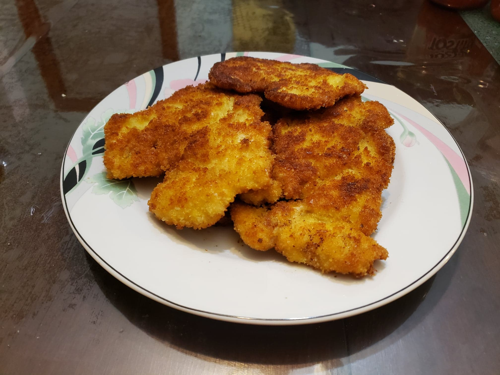

Chicken Katsu (Traditional)

Ingredients:
- 1 1/2 lb Chicken breasts, about 2 breasts, cut into slices
- Salt, to taste
- Black pepper, to taste
- Flour
- 3 Eggs, beaten
- Panko bread crumbs
- Oil for frying
Instructions:
- Pound the chicken until flat and very thin. Season with salt and pepper to taste.
- Place the flour, egg and panko crumbs into separate shallow dishes. Dredge the chicken breasts in flour. Then dip the chicken breast in the eggs, then coat them in the panko bread crumbs.
- Place enough oil into a pan to reach half of a chicken breasts thickness. Fry each chicken breast over medium heat for 3 minutes on each side.